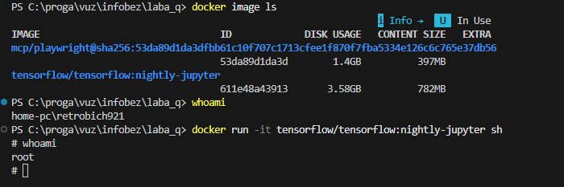
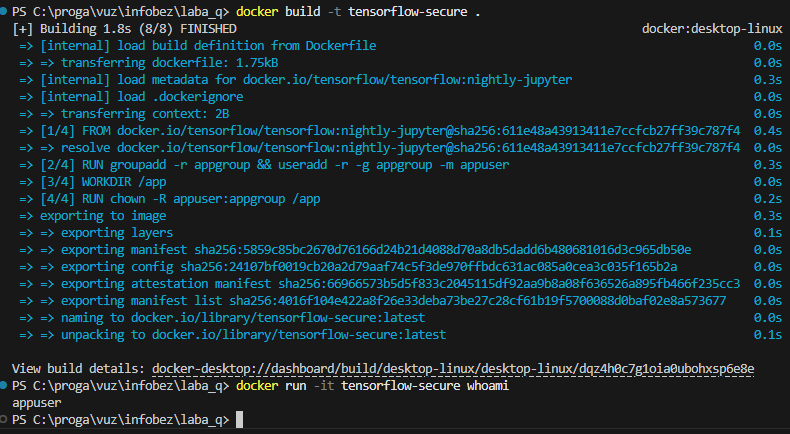
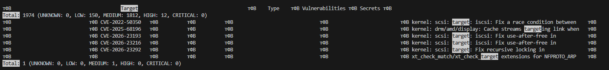

Цель: Узнать, от какого пользователя всё запускается в обычном образе из интернета.
Выбранный образ: tensorflow/tensorflow:nightly-jupyter
# Проверка пользователя внутри стандартного контейнера
docker run -it tensorflow/tensorflow:nightly-jupyter sh
whoami
# Результат: root
Рис 1. Проверка прав root в стандартном образеЦель: Сделать свой образ, который запускается от обычного пользователя, а не от админа.
# Основная инструкция в Dockerfile для смены пользователя:
USER appuserПроверка после сборки:
docker run -it tensorflow-secure whoami
# Результат: appuser
Рис 2. Подтверждение работы от имени appuserЦель: Проверить наш образ на "дыры" (уязвимости) с помощью сканера Trivy.
Для получения сводной статистики использовалась команда:
docker run --rm -v /var/run/docker.sock:/var/run/docker.sock aquasec/trivy image tensorflow-secure | Select-String -Pattern "Total:", "Target"pip.
Рис 3. Итоговая статистика сканирования уязвимостей